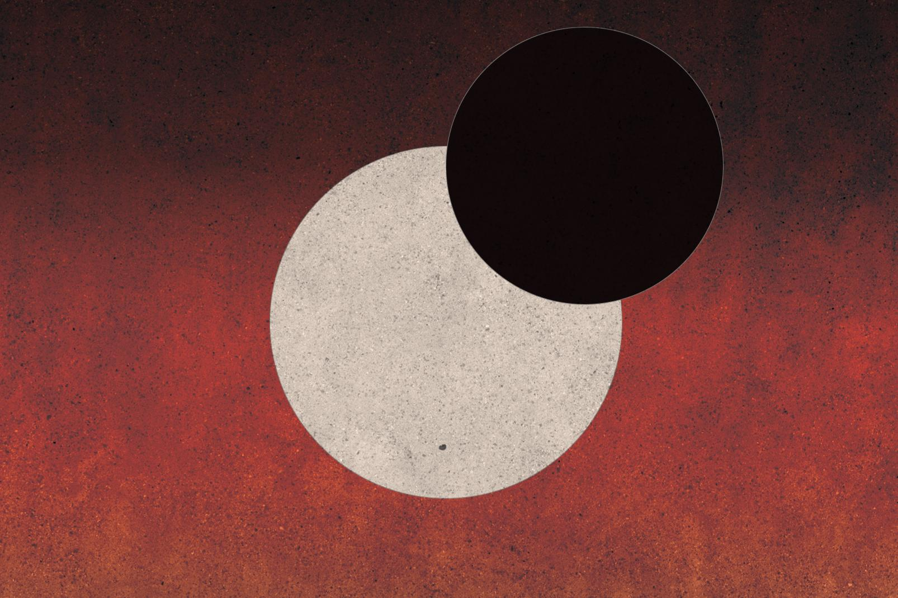

KHÚC CA MẶT TRỜI ĐỎ
Song of the Red Sun

Đây là một website nhỏ tôi đăng tải tiểu thuyết dài tập vẫn đang trong quá trình sáng tác. Tôi có mong muốn viết ra những câu chuyện hay. Muốn dệt lên thế giới qua lăng kính của ngôn từ. Một thế giới nhiều chiều sâu về cả văn hóa và tín ngưỡng. Đó là một thế giới khi những từ ngữ như “Ngày” và “Đêm” đã lùi về rất xa. Chúng chỉ còn tồn tại trong những câu chuyện của giáo hội, hay những câu chuyện mà mọi người kể với nhau về thời đại cũ. Khóa thủy triều hay Tidally locked là cách gọi hiện tượng đó. Nó khiến cho chu kỳ tự quay quanh trục của bản thân Trái Đất bằng chính chu kỳ mà Trái Đất quay quanh Mặt Trời. Hệ quả của khóa thủy triều khiến cho hành tinh sẽ luôn có một mặt rực cháy vì hướng về phía Mặt Trời. Còn nửa kia luôn chìm trong băng giá và đêm tối. Đây là câu chuyện, là khúc ca của những con người đang sống và co cụm tại dải đất dài và hẹp đó. Vùng đất đó được gọi là vành đai Hoàng Hôn.
ĐỌC TRUYỆN